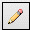
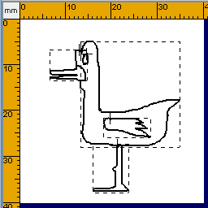
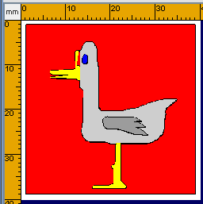

Premere sul tasto Disegno a Mano Libera poi posizionare il mouse sull'area di lavoro. Serviranno due clic uno per il punto iniziale e uno per il punto finale. entrambi i clic sono fatti con il tasto sinistro del mouse. Non e' necessario tenere premuto il mouse fra i due clic.
.
Sara' poi possibile usare il colore di riempimento per rifinire il disegno.  |